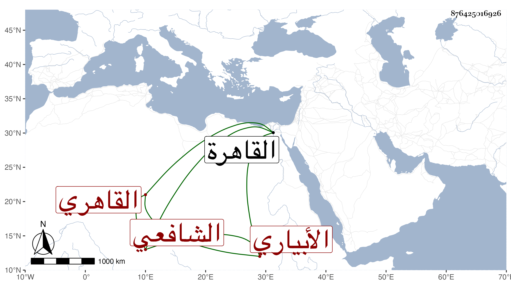

0902Sakhawi.DawLamic.ITO20230111-ara1.EIS1600.876425016926
Biography ID: 876425016926
321
عبد الرحمن بن محمد بن أحمد بن عبد العزيز بن عمان بن سند بن خالد الجلال أبو الفضل بن البدر الأبياري الأصل القاهري الشافعي أخو عبد اللطيف ومحمد وأحمد ويعرف كسلفه بابن الأمانة . ولد في خامس صفر سنة ثلاث وعشرين وثمانمائة بخزانة البنود من القاهرة ونشأ بها في كنف أبيه فحفظ القرآن والعمدة والمنهاج الفرعي والأصلي وألفية الحديث والنحو وعرض على والده وشيخنا وطائفة كالمحب بن نصر الله وقرأ في قواعد ابن هشام على والده بل أعرب عليه في الطارقية وكذا قرأ في العربية على أبي عبد الله الراعي والعلاء القلقشندي وحضر الفقه عند أبيه والونائي والقاياتي في آخرين ولازم فيه العلاء تقسيما وغير ذلك وقرأ عليه المنهاج الأصلي حتى كان جل انتفاعه به وكذا لازم شيخنا حتى أخذ عنه دراية شرح النخبة وغيره ورواية الكثير وجود بعض القرآن على ابن كزلبغا بل حضر عنده الكثير في تجويده وكتب علي الزين بن الصائغ وسمع علي ابن الجزري الختم من مسند الشافعي بل قرأ علي ابن ناظر الصاحبة وابن بردس وابن الطحان الأربعين التي انتقاها شيخنا من مسلم وجميعه علي الزين الزركشي والبخاري علي الصالحي والسنن لأبي داود على سارة ابنة ابن جماعة وأكثر من القراءة والسماع وأجاز له الكمال بن خير والبرهان الحلبي وعائشة ابنة ابن الشرائحي والحافظ ابن ناصر الدين وخلق باستدعاء ابن فهد وغيره ، واستقر بعد أبيه فيما كان باسمه من التداريس وغيرها شركة لأخوته وكذا تكلم في الصالحية وغيرها ودرس في الفقه نيابة بالزنكلونية وبالشيخونية استقلالا بعد الشهاب الأبشيهي وكتب حينئذ على دروسه في المنهاج بل عمل منسكا لطيفا وضبط من الحوادث والتراجم جملة في مجلدات ما رأيتها وكذا جمع زيادة على عشر مجلدات فوائد شبه التذكرة ونظم قليلا وأذن له شيخنا وغيره في الافادة وناب في القضاء عن السفطي فمن بعده وكان قارئ الحديث عنده في كل سنة بل عينه في أيام قضائه للقراءة بالقلعة عوضا عن البقاعي ثم انفصل عنها بالولوي الأسيوطي وصار بأخرة رأس النواب بل عمل أمانة الحكم وقتا وكذا ناب عن الزيني بن مزهر في أشياء وعظم اختصاصه به وحج معه في الرجبية وتزوج هناك ورزق ابنة سوى ابنتيه من ابنة صاحبنا المحب القادري أكبرهما تحت ابن حجاج وابتلوا به والثانية تحت ابن للشرفي الأنصاري ، وكان حج قبل ذلك سنة ثمان وأربعين ، وذكر للقضاء غير مرة وكذا كتب له بالجمالية عقب الأسيوطي ثم عقب أخيه وهو يصالح في كل منهما وهو متين العقل كثير التودد والمداراة حسن العشرة لطيف المحاضرة لا يبقي على شيء مقبول الشكل ولكن توالت عليه التعللات . 322 عبد الرحمن بن محمد بن أحمد بن عبد القادر بن يعقوب بن محمد الديروطي ويعرف بابن الرزاز وابن البياع . تلا بالسبع على بلديه حسن ثم على جعفر السنهوري .
